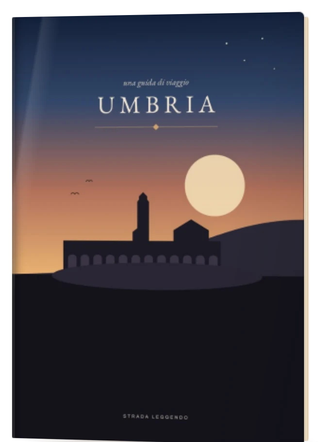
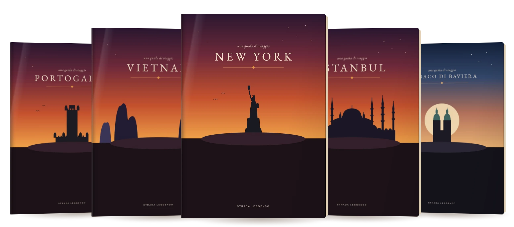
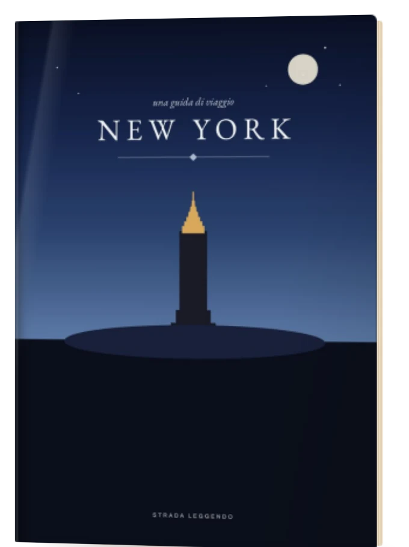
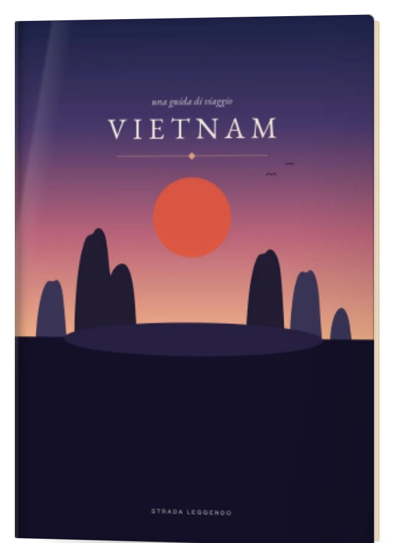
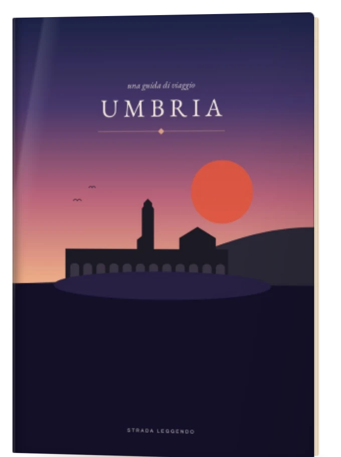
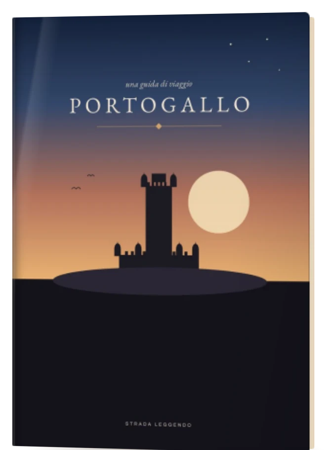
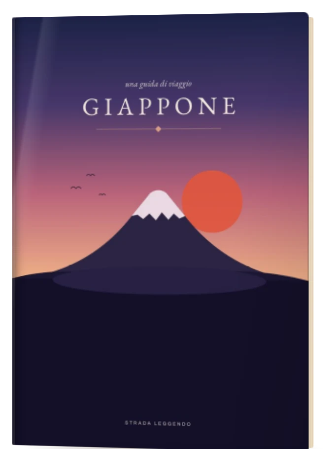

Il libro di Assisi
Umbria
Un libro sulle vostre tappe, con i vostri nomi e le cose che amate, da un weekend di 4 giorni a un viaggio di 12. Lo leggete online e lo ricevete stampato. Le prime pagine sono gratuite.

Luogo, capitoli, ritmo e consigli cambiano con chi parte. Queste sono tre delle guide già composte, nessuna uguale all’altra.

Umbria

Manhattan, Brooklyn, Harlem

Vietnam
Tappe, mezzo, ritmo, occasione e le cose che non volete perdere. Avete già un programma? Caricatelo in PDF, Excel, CSV o in foto.
Il vostro viaggio
Una breve conversazione per capire chi siete e cosa cercate davvero, prima che si scriva una riga.
Il vostro autore
A Sintra preferite arrivare col primo treno o dormire una notte lì?
Col primo treno. E torniamo a Lisbona per cena.
Allora il capitolo comincia alla stazione del Rossio, prima delle otto.
Da leggere prima e durante il viaggio: online e poi stampata.
Portogallo, 7 giorni
Capitolo III
New York (Manhattan, Brooklyn, Harlem)
La città che si capisce con i piedi
Strada Leggendo · una guida di viaggio per Elena
I. Times Square, da sola, la prima notte
Times Square va vista la prima sera e poi lasciata perdere. Non è un insulto: è il modo giusto di usarla. Il 29 dicembre arrivi prima del gruppo. Per una notte nessuno ti spiega niente e nessuno ti aspetta, e questa è la condizione migliore per l’incrocio più fotografato del pianeta.
Il Moxy, dove dormirai le prime notti, sta a pochi isolati a sud. Esci dopo cena, quando il fuso orario ti tiene sveglia comunque, e cammina verso nord lungo la Seventh Avenue.
Un weekend in auto, una settimana in treno, un viaggio di nozze: il numero dei capitoli, il ritmo e i consigli seguono il viaggio che avete in mente.



Prima che un indirizzo entri in un capitolo, controlliamo quattro cose. Poi rispondiamo alle domande che ci fate più spesso.
Verifica della tappa
Il vostro programma, se l’avete: PDF, Excel, CSV, testo o una foto, fino a 3 file da 20 MB ciascuno. Altrimenti bastano tre righe su dove andate e quando.
Le prime pagine sono gratuite. Le leggete prima di decidere se continuare.
Sì. La guida si legge online, prima e durante il viaggio, e arriva anche stampata.
Sì. I nomi di chi viaggia entrano nel racconto: la guida parla di voi, non di due generici viaggiatori.